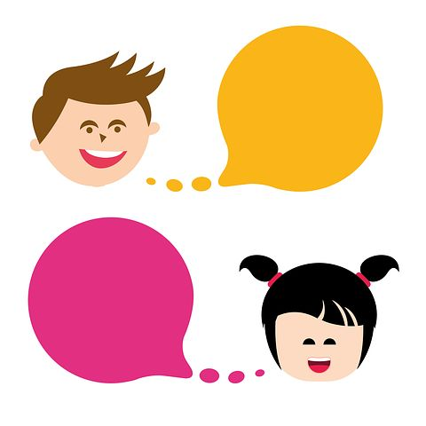
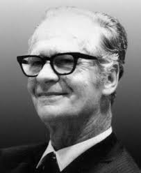
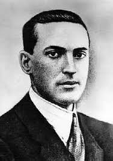
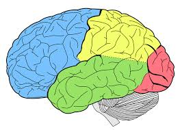
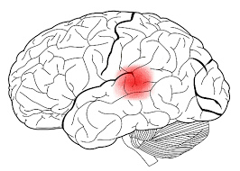
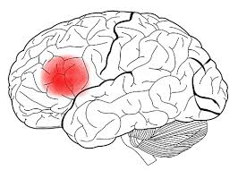

PRINCIPALES TEORÍAS ACERCA DE LA ADQUISICIÓN DEL LENGUAJE
Imagen - Licencia: CC0
El desarrollo el lenguaje se encuentra intrínsecamente ligado a la madurez cerebral del niño y al contexto sociofamiliar en el que se esté desarrollando. Tal y como veremos en los siguientes apartados, el lenguaje infantil se inicia con un período prelingüístico en el que el bebé emite pequeños balbuceos que se irán convirtiendo poco a poco en expresiones sonoras; éstas, a pesar de no tener relación con el lenguaje tal y como lo entendemos, adquieren un significado contextual, permitiendo que pueda expresarse con las personas de su entorno. Aproximadamente en el 8º mes, el balbuceo del bebé dará lugar a un comportamiento ecolálico del que emergerán sus primeras palabras (como pueden ser "mamá" o "papá"), y a partir de este momento aumentará exponencialmente la capacidad del niño de producir palabras. Durante el 2º año de vida, se produce una explosión funcional en su capacidad de adquirir y manejar el lenguaje. Esta explosión coincide con un pico de mielinización de los axones, lo que permite que haya una conexión más fluida en los circuitos neuronales que se establecen entre diferentes áreas cerebrales, provocando un manejo más integrado del uso del lenguaje (Rodríguez, 2016). Desde este momento, el niño avanza de manera vertiginosa en el manejo y adquisición de este proceso, de manera que a los 5-6 años, podemos decir que ya ha estructurado la base del lenguaje. A partir de este momento, tendrá que enriquecer y optimizar su manejo, aprender a manejar la lectura y escritura, perfeccionar el manejo social del mismo y aprender a utilizarlo voluntariamente como herramienta de pensamiento (Pérez y Capilla, 2008). Todo este proceso de producción de lenguaje, es siempre más lento que el de comprensión, de manera que en su primer año de vida, el niño ya es bastante eficaz en la comprensión del lenguaje ante palabras sencillas y entonación clara (Gil, 2006).
El proceso de desarrollo que hemos expuesto de manera muy sucinta, ha sido explicado a lo largo de la historia desde distintas teorías o perspectivas, influyendo por un lado en el modo en el que se comprende la adquisición del lenguaje desde un punto de vista evolutivo y/o pedagógico, y por otro, en el papel que cumple el niño en el proceso de adquisición (activo o pasivo). A continuación se exponen someramente las principales teorías clásicas desarrolladas para explicar la adquisición del lenguaje:
Teoría conductista del aprendizaje
La teoría conductista del aprendizaje representó el primer intento de proporcionar una explicación al desarrollo del lenguaje exponiendo los procesos de aprendizaje del lenguaje en los niños. Skinner (1957) fue el principal exponente de la idea de que un comportamiento (el lenguaje para él lo es) una vez reforzado, continuará especialmente después de un refuerzo o premio. Según esta teoría, en los primeros estadios, los niños reproducirían todos los sonidos de todos los idiomas y los padres reforzarían selectivamente, a través de la atención o aprobación, los que correspondieran a la lengua nativa. El refuerzo puede ser verbal o físico. Este refuerzo selectivo daría como resultado la producción de palabras. Una vez que el niño fuera capaz de hablar, podría producir una emisión. Por ejemplo, el niño podría decir pan y ser reforzado al recibir lo que pide.

A este respecto, los detractores de esta teoría señalan que es difícil entender cómo el niño puede aprender a hablar y a producir oraciones sólo como resultado de un refuerzo. Volviendo al ejemplo anterior de pan. Si su uso depende del refuerzo ¿qué impulsa la primera emisión? ¿es un impulso interno porque el niño tiene hambre? ¿o bien ve una barra de pan, migas o un bocadillo y entonces emitepan__? Por lo tanto, no es probable que el refuerzo sea el único medio disponible para el desarrollo del lenguaje. Por otro lado, el papel crucial que desempeñan los padres con la variedad de reforzadores que pueden ofrecer y con la consistencia o inconsistencia de los mismos parece desproporcionado. Uno de los principales defectos de esta teoría es que presenta al niño como un receptor pasivo de la estimulación ambiental y del refuerzo y no se considera la posibilidad de que el niño pudiera construir activamente su lenguaje fuera de la imitación; aspecto, por otro lado, clave de esta corriente conductista.
A pesar de que existan claros obstáculos en la adecuación explicativa de la teoría del aprendizaje aplicada al desarrollo del lenguaje, es importante reconocer el papel del ambiente en el mismo. Algunos de los procesos, como la imitación, pueden jugar un papel en el desarrollo del mismo, pero, de ningún modo, constituyen todo el proceso. El aprendizaje del lenguaje es mucho más complejo y complicado y requiere que el niño desempeñe un papel activo en el mismo.
Teoría innatista
El máximo exponente de la teoría innatista de adquisición del lenguaje es Chomsky. Fue el primer lingüista que intentó explicar las propiedades estructurales universales del lenguaje, llevándole a examinar los procesos de adquisición del mismo. Según sus teorías existen reglas universales que podrían diferenciar entre oraciones gramaticales y no-gramaticales en cualquier idioma. Propuso dos niveles de reglas: uno que contendría las de aplicabilidad más general y, otro, que contendría manifestaciones específicas de las reglas generales. Estos dos niveles se corresponderían con lo que denominó estructura profunda y estructura superficial del lenguaje. Los constituyentes de la estructura profunda serían los universales del lenguaje, que posibilitarían la generación de estructuras superficiales gramaticales en cualquier lenguaje. Este proceso de especificación fue llamado generación por Chomsky. Dado que las reglas de la gramática generativa serían universales, sería lógico asumir que, puesto que todo el mundo aprende el lenguaje, éste debería ser una capacidad innata, es decir, algo con lo que todo el mundo nace. Chomsky postuló la existencia de un mecanismo que denominó LAD (Language Acquisition Device) que estaría preparado para producir una gramática del lenguaje capaz de generar oraciones comprensibles. También es necesario considerar la distinción que hizo Chomsky entre competencia y actuación lingüística. La competencia se equipara al conocimiento de las reglas de la gramática, mientras que actuación sería la producción realmente emitida. La competencia se deriva de la actuación aunque para Chomsky, la adquisición de la competencia, del conocimiento sobre las reglas gramaticales del lenguaje, era más importante.
Imagen - Licencia: CC0
Teoría de Vygotsky
La teoría de Vygotsky no solamente abarca el desarrollo del lenguaje sino también el de otros procesos mentales superiores incluyendo todas las formas de inteligencia y memoria. Su trabajo teórico ha influido en los estudios sobre el desarrollo cognitivo infantil, especialmente sobre los procesos de memoria, la solución de problemas y la relación entre lenguaje y pensamiento (Wertsch, 1985). El desarrollo del niño en el lenguaje hablado, escrito y de los sistemas numéricos es equiparado a los cambios culturales en el uso y dominio de esos sistemas de signos. La teoría de Vygotsky descansa sobre la premisa fundamental de que el desarrollo tiene lugar en un nivel social, dentro del contexto cultural. El niño interiorizaría los procesos mentales que inicialmente se harían evidentes en las actividades sociales, pasando del plano social al individual. El mismo principio puede aplicarse al aprendizaje escolar. La posición de Vygotsky es que el funcionamiento individual está determinado exclusivamente por el funcionamiento social y que la estructura de los procesos mentales de un individuo refleja el medio social del cual se derivan. A pesar de afirmar que el lenguaje y el pensamiento tienen raíces separadas y que se desarrollan de forma independiente durante un tiempo, Vygotsky mantenía que el desarrollo intelectual del niño es contingente a su dominio de los medios sociales de pensamiento, es decir, del lenguaje. La interacción social, derivada de la cultura en un momento dado o de la perspectiva histórica, en algún sentido crea el lenguaje.
Imagen - Licencia: CC0
Teoría de Bruner
Jerome Bruner desestimó tanto la imitación como lo innato y centró sus estudios del origen del lenguaje en la interacción social. Para ello introdujo el concepto de LASS (Language Acquisition Support System o sistema de apoyo para la adquisición del lenguaje) y mantuvo que el niño aprendería a hablar a través de la interacción con la madre. Propuso una predisposición para que el LASS pudiera actuar (semejante al LAD de Chomsky) que precisa un marco interactivo para funcionar. Bruner, como Vygotsky, consideró que deben darse marcos de interacción social adecuados para que tenga lugar el aprendizaje y llamó a esto andamiaje (Bruner, 1977).
Imagen - Licencia: CC0
Perspectiva neuropsicológica

Si bien todas estas teorías procuran explicar el modo en el que se produce la adquisición del lenguaje en su interacción con el medio, el modelo neuropsicológico aporta la relación que se produce entre la adquisición del proceso y el desarrollo de las estructuras neurofisiológicas que dan soporte a la aparición del lenguaje. De esta manera, en nuestros primeros años de vida se producirá una especialización de los hemisferios cerebrales, de manera que el proceso del lenguaje será sustentado principalmente por el hemisferio dominante (habitualmente el izquierdo). Sin embargo, tanto la lectoescritura como el lenguaje -tal y como lo conocemos-, requerirán que ambos hemisferios trabajen en conjunto para ser capaces de desarrollar un manejo adecuado de este proceso. Dentro del hemisferio izquierdo, podemos establecer la existencia de un polo receptivo y un polo expresivo, a los que darán soporte diversas áreas cerebrales. Cada uno de estos polos se encuentran unidos por numerosas fibras asociativas, permitiendo la comunicación entre ambas funciones (Gil, 2006). Veamos cuáles son las funciones y el sustrato neuroanatómico de cada uno de estos polos:
Polo receptivo o posterior (comprensión del habla y lectura)
Será el encargado de recibir información y entenderla, lo que implica la audición con la comprensión del lenguaje hablado, y la visión con la comprensión del lenguaje escrito. Tradicionalmente se ha considerado que esta parte del lenguaje se desarrollaba en el área de Wernicke - situada en el lóbulo temporal izquierdo-, aunque actualmente se sabe que para una buena comprensión del lenguaje hablado y escrito es necesario que se encuentren implicadas la corteza primaria auditiva, la corteza primaria visual, el giro angular, así como estructuras subcorticales. Todas estas áreas en conjunto permitirán la decodificación, comprensión del contenido y comprensión contextual o pragmática tanto del lenguaje hablado como escrito.
Imagen - Área de Wernicke. Licencia: CC0
Polo expresivo o anterior (expresión del habla y escritura)
Será el encargado de expresar el lenguaje, ya sea a través de la fonación o articulación verbal o de la escritura. Durante mucho tiempo, se consideró que el área implicada en la capacidad expresiva del lenguaje era el área de Broca (tercera circunvolución del lóbulo frontal izquierdo-dominante), aunque nuevamente las técnicas de neuroimagen han permitido discernir que la estructura en la que se sustenta la producción de lenguaje es mucho más compleja. Para que se dé lugar una buena producción hablada o escrita, es necesario contar con estructuras subcorticales, así como de áreas motoras y prefrontales.
Imagen - Área de Broca. Licencia: CC0
Si quieres saber más acerca de este tema, y visualizar las diversas áreas cerebrales de las que hemos hablado, te recomendamos que visualices el siguiente vídeo: